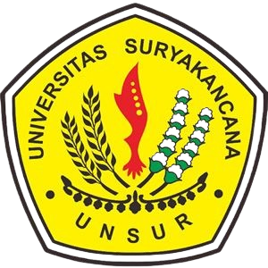
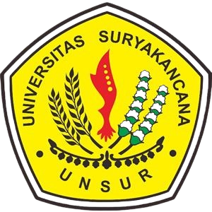

Selamat Datang di Website KKN Desa Cirama Girang
Website ini didedikasikan untuk menginformasikan kegiatan Kuliah Kerja Nyata (KKN) yang dilaksanakan oleh mahasiswa Universitas Suryakencana di Desa Cirama Girang.
Kami hadir untuk mendukung pembangunan dan pemberdayaan masyarakat Desa melalui berbagai program inovatif. Ikuti terus perkembangan program-program kami, profil tim, dan dokumentasi kegiatan yang bermanfaat bagi masyarakat.
Tentang KKN Desa Cirama Girang
Program KKN tahun 2025 di Desa Cirama Girang berfokus pada pengembangan potensi lokal, peningkatan kesejahteraan, dan penguatan kemandirian masyarakat. Tim kami terdiri dari mahasiswa berbagai disiplin ilmu yang siap berkolaborasi untuk menciptakan dampak nyata.
Visi
Mewujudkan Desa Cirama Girang yang mandiri, sejahtera, dan berkelanjutan melalui sinergi Tri Dharma Perguruan Tinggi.
Misi
- Mengidentifikasi dan mengembangkan potensi sumber daya desa.
- Melaksanakan program kerja yang inovatif dan relevan dengan kebutuhan masyarakat.
- Meningkatkan kapasitas sumber daya manusia di Desa Cirama Girang.
- Membangun kemitraan strategis dengan berbagai pihak.
Program Unggulan Kami
Bazar Usaha Mikro Kecil Menengah(UMKM)
Ayo meriahkan bazar UMKM kami!
Temukan beragam produk unik dan berkualitas tinggi dari pengusaha lokal, Mulai dari kuliner lezat, acara music, dukung UMKM indonesia dan dan nikmati pengalaman berbelanja yang istimewa, jangan lewatkan kesempatan ini! Detail ProgramMemeriahkan Hari kemerdekaan
Gebyar kemerdekaan 2025!
Mari kita rayakan ulang tahun Kemerdekaan Republik Indonesia ke-80 dengan penuh semangat dan keceriaan! Program kerja ini hadir untuk memupuk rasa nasionalisme dan kebersamaan melalui serangkaian lomba tradisional yang seru, Hiburan rakyat. Ajak seluruh lapisan masyarakat untuk berpartisipasi dan rasakan indahnya di momen istimewa ini! Detail ProgramLihat semua program kerja kami di halaman Program Kerja.
Berita Terbaru & Pembaruan
Kegiatan Posyandu Rutin di RW 03
15 Juli 2025
Tim KKN Desa Cirama Girang berhasil menyelenggarakan Posyandu rutin bulan Juli dengan partisipasi aktif warga. Fokus pada pemeriksaan gizi balita dan edukasi kesehatan ibu hamil.
Baca SelengkapnyaPelatihan Pengelolaan Sampah Organik dan Anorganik
10 Juli 2025
Mahasiswa KKN memberikan pelatihan komprehensif tentang pemilahan dan pengolahan sampah, memperkenalkan metode kompos dan daur ulang kepada masyarakat.
Baca Selengkapnya